pontos de NPS em seis meses. Escalas de caixa reorganizadas e reposição rápida com disciplina semanal. Do Flop 10 ao Top 10.
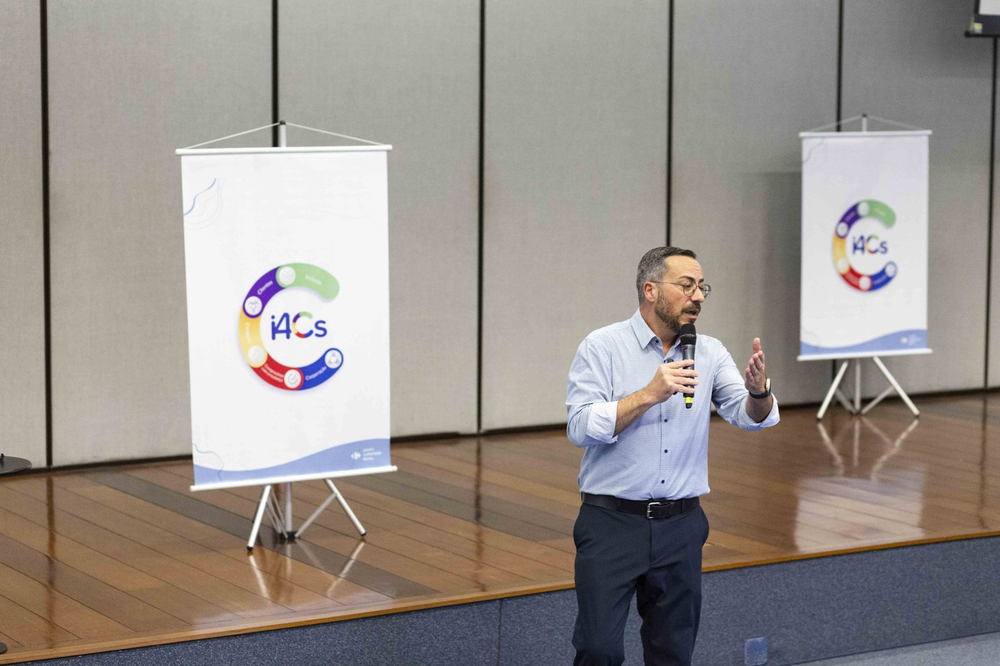
kiko campos
Estudo de caso · Cultura, liderança e integração · 2018–2025
Cultura como sistema
Do Walmart ao BIG, do BIG ao Carrefour. Como uma operação desacreditada se tornou referência do grupo em cultura, liderança e cliente. Um caso contado por dentro, para quem faz a mudança chegar à ponta.
Kiko Campos · Diretor Sênior de RH, Grupo Carrefour Brasil (2019–2025)
Use as setas ← → ou deslize para navegar
AberturaNota do autor
Por que escrevi este caso
Seis anos, duas transformações e uma convicção que sobreviveu a ambas.
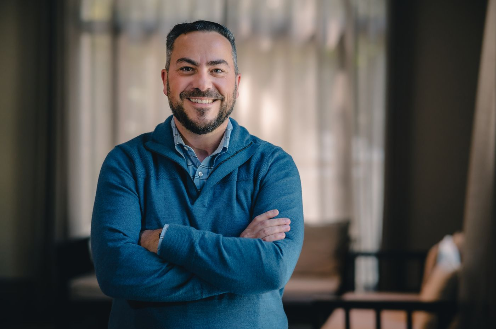
Este não é um relato de sucesso. É um registro de método.
Entre 2019 e 2025, liderei o RH de uma companhia que mudou de dono, de nome, de marca e de cultura. Duas vezes. Primeiro, a operação que o Walmart deixou no Brasil virou Grupo BIG. Depois, o BIG foi incorporado pelo Carrefour, na maior consolidação da história do varejo alimentar brasileiro.
A maior parte do que se publica sobre fusões fala de sinergia, preço e governança. Pouco se escreve sobre o que acontece no corredor da loja às sete da manhã, quando o time descobre que a empresa mudou de novo. É ali que uma integração dá certo ou fracassa.
Há resultados aqui, e eles importam. Mas há também decisões difíceis, lojas fechadas e crises que expuseram a companhia. Deixei tudo isso no texto porque um caso que só mostra acertos não ensina ninguém. Escrevi para quem precisa fazer a mudança chegar à ponta. Espero que encontrem aqui menos inspiração e mais ferramenta.
Kiko Campos
AberturaGuia de leitura
A tese
Cultura não é o que a empresa declara. É o que ela tolera, recompensa e promove, todos os dias.
Quando é tratada como sistema de gestão, a cultura sustenta um turnaround, amortece uma integração e muda indicadores de negócio. Dois ciclos, mais de 150 mil pessoas e o mesmo princípio.
Cultura não se impõe; se desenha. Não se copia; se constrói com o que é genuíno. Não se sustenta com discurso; se sustenta com experiências repetidas.
O que levar deste caso
- 01A distinção. Campanha termina. Sistema continua funcionando quando ninguém está olhando.
- 02O mecanismo. Cada ferramenta, em cada ciclo, e o que ela muda no comportamento.
- 03A prática. Cinco perguntas de diagnóstico para levar para a sua organização na segunda-feira.
Como o caso está organizado
Três atos, na ordem em que aconteceram: a descrença (2018), o método (2019–2021) e a travessia (2021–2025). Cada ato traz contexto, um conceito de apoio, as ferramentas, a evidência e cenas que vivi, extraídas do livro O Novo Código da Mudança.
AberturaLinha do tempo
Sete anos, em sequência
Mudou o dono, o nome, a marca e a cultura. Duas vezes.
AberturaConceito de apoio · Schein (2010)
A lente de leitura
Cultura tem camadas. A mudança que importa acontece embaixo.
Edgar Schein, do MIT, descreve a cultura em três níveis. O que se vê é a superfície. O que governa o comportamento são os pressupostos que ninguém escreve, porque todo mundo já sabe.
Campanhas mexem no primeiro nível. Sistemas chegam ao terceiro. É por isso que valor declarado e valor vivido raramente coincidem no começo de uma transformação.
Nível 1 · Visível
raso
Artefatos
O que se vê, se ouve e se toca: pôsteres, rituais, layouts, a forma como uma reunião começa.
A live mensal do 555. O pôster dos 4Cs.
Nível 2 · Declarado
médio
Valores expostos
O que a empresa diz que valoriza: estratégia, metas, filosofia.
Jeito Big. 4Cs. i4Cs.
Nível 3 · Invisível
profundo
Pressupostos básicos
Crenças tidas como certas, que orientam a ação sem precisar ser ditas.
De "Já vimos isso antes, nada muda" para "Aqui, liderar inclui ensinar".
Ato I · 2018Walmart Brasil
I
Uma empresa que já tinha ouvido tudo
“Já vimos isso antes. Nada muda.”Frase que circulava nas lojas, 2018
Não era resistência, era memória. Quando uma organização acumula mudanças anunciadas e abandonadas, as pessoas aprendem a esperar a próxima passar. O ceticismo deixa de ser opinião e vira mecanismo de proteção.
Ato I · 2018Contexto e diagnóstico
O ponto de partida
O problema mais caro não aparecia no balanço.
Em junho de 2018, o Walmart vendeu 80% da operação brasileira para a Advent International, que se comprometeu a investir R$ 1,9 bilhão. Eram oito bandeiras herdadas de aquisições, hipermercados deficitários e um atacarejo sem competitividade. O varejo saía da recessão, o atacarejo crescia mais de 15% ao ano e redes regionais ganhavam espaço pela proximidade com o cliente.
| 2017 | Faturamento bruto | Vendas/m² | Share |
|---|---|---|---|
| Carrefour | R$ 49,7 bi | R$ 33 mil | 14% |
| GPA | R$ 48,5 bi | R$ 31 mil | 13% |
| Walmart Brasil | R$ 28,2 bi (–4,3%) | R$ 27 mil | 8,5% |
Fonte: Valor Econômico (2018); relatórios setoriais.
Na linguagem de Schein, uma cultura cristalizada
- 01Decisões tomadas em Bentonville, com pouca autonomia local.
- 02Bandeiras operando como feudos, disputando recurso e prioridade.
- 03Favorabilidade de clima abaixo de 60% em 2017.
- 04Turnover gerencial acima de 35% ao ano.
- 05Nenhum símbolo ou ritual que sustentasse o que a empresa dizia valorizar.
Descrença não se combate com campanha. Se combate com coerência repetida.
Ato I · 2018Conceito de apoio · Beer & Nohria (2000)
A aposta da Advent
A maior parte dos turnarounds escolhe um caminho. Este precisava dos dois.
Teoria E · economia
Resultado rápido: renegociar contratos, reduzir estoques, converter hipermercados em atacarejo, recuperar margem.
Teoria O · organização
Mais lento e mais arriscado: reconstruir engajamento, devolver autonomia à liderança local e criar os símbolos que a empresa nunca tivera.
A agenda de RH de 2019–2022 foi desenhada para sustentar as duas ao mesmo tempo: liderar a transformação cultural, reconstruir orgulho, fortalecer diversidade e reconhecimento.
A Advent havia comprado lojas. Era preciso reconstruir o que não estava à venda.
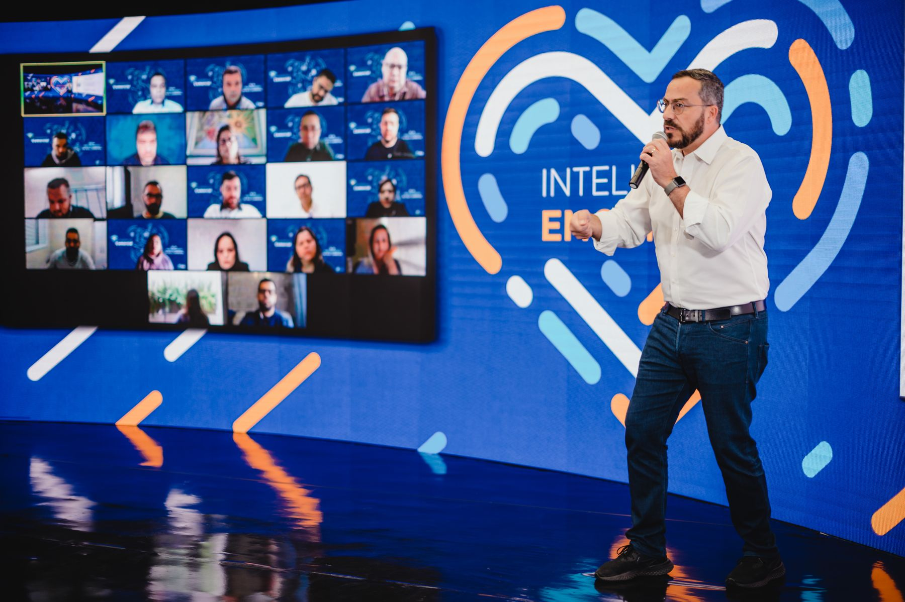
Ato II · 2019–2021Grupo BIG
II
Jeito Big: cultura como método de turnaround
Cultura importada não pega. Cultura construída por quem vai vivê-la, sim.
Mais de 50 mil pessoas precisavam de uma linguagem comum. A decisão mais importante foi sobre quem faria o trabalho: o RH interno desenhou, produziu e conduziu tudo, sem consultoria externa. Reduziu custo e, principalmente, deu legitimidade.
Cena · 2019, início do Jeito Big
Um gerente me disse algo que nunca esqueci:
Aqui embaixo, a gente aprende mais com o que o chefe faz no corredor do que com o que ele fala na convenção.
Ato II · 2019–2021Modelo cultural
A arquitetura
Três camadas, uma coerência.
O valor do modelo não estava nas palavras escolhidas. Estava na coerência entre as camadas: o que se espera de todos, o que acelera a virada e o que se exige de quem lidera.
A lógica de desenho
Valores para todos. Comportamentos para o momento do negócio. Competências para quem lidera. Cada camada vira critério em um processo diferente, e é isso que impede o modelo de virar quadro na parede.
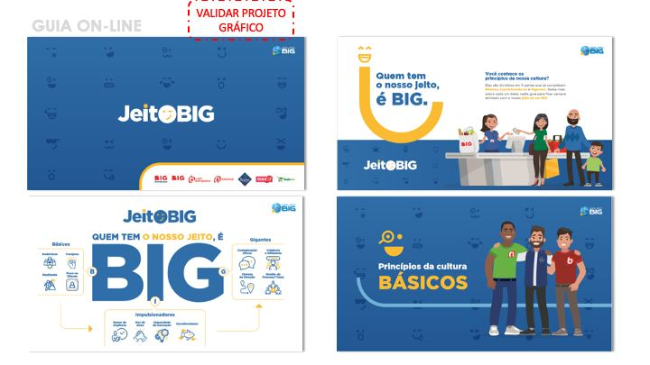
Básicosvalores de todos
- Ambição
- Coragem
- Resiliência
- Foco no Cliente
Impulsionadoreso que acelera
- Senso de Urgência
- Dor de Dono
- Capacidade de Execução
- Inconformismo
Gigantesquem lidera
- Comunicação Eficaz
- Clareza de Direção
- Colaborar e Influenciar
- Gestão de Pessoas e Times
Ato II · 2019–2021Ferramentas · toque para explorar
Da declaração ao comportamento
Valor declarado só vira valor vivido quando alguém o pratica sob pressão.
Ato II · 2019–2021Escuta · inspirada no Q12 da Gallup
Escutar menos perguntas, entender mais respostas
De 50+ perguntas para 12.
A pesquisa de clima herdada tinha mais de 50 perguntas e era difícil de transformar em ação. O Big Voice reduziu o instrumento a 12 questões essenciais. Em 2020, 93% de adesão, 33,5 mil pessoas.
O eNPS subiu 30 pontos, com 46% mais promotores. E o dado mais relevante estava fora da pesquisa: as áreas com melhor Big Voice eram também as de NPS de cliente mais alto e menos ruptura. Não prova causalidade, mas mostra uma correlação que a liderança passou a levar a sério.
O tamanho do questionário é uma decisão de liderança, não um detalhe técnico de RH.
Questionário grande gera diagnóstico grande e ação pequena. E ação pequena corrói a confiança no processo.
Antes2020Favorabilidade, em %
Os maiores saltos estão em feedback e reconhecimento. Nenhum dos dois depende de política. Os dois dependem do gesto diário do líder.
Ato II · 2019–2021Evidência
O que mudou no negócio
A cultura deixou de ser custo e passou a ser argumento de valuation.
+3,7 p.p.de margem do varejo entre 2019 e 2021
R$ 700 miem ganhos comerciais acumulados
14% → 6%de ruptura
70% → 99%de pontualidade logística
–R$ 77 miem excesso de estoque
1 milhãode clientes ativos no app Big & Você
Mais de mil multiplicadores (supervisores, coordenadores e talentos emergentes) sustentaram os rituais na ponta. Em 2021, com engajamento em alta e margem recuperada, a Advent iniciou os roadshows do IPO. O IPO não aconteceu: em março de 2021, o Carrefour anunciou a compra do Grupo BIG.
O Jeito Big não chegou ao pregão. Mas transformou um ativo desacreditado em um ativo desejado.
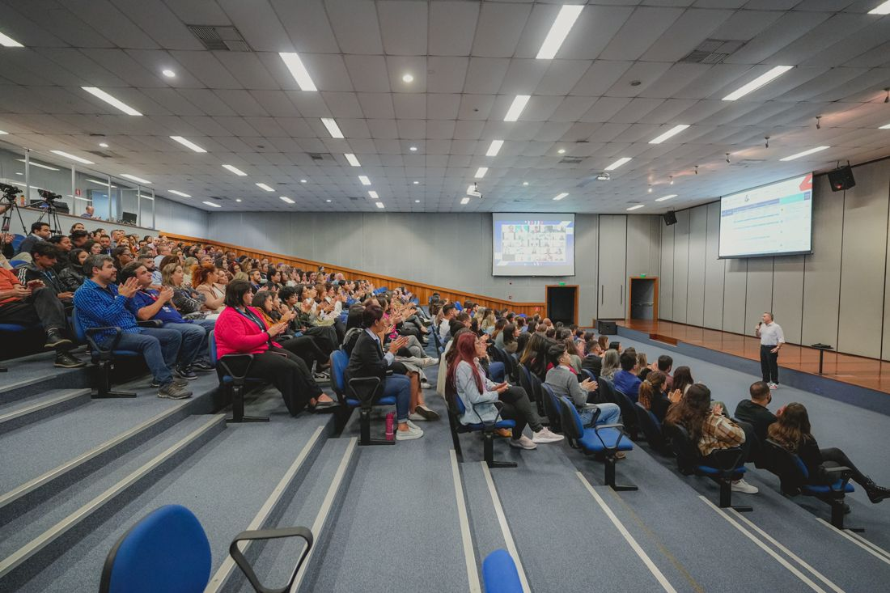
Ato III · 2021–2025Carrefour Brasil
III
Juntar quatro empresas sem apagar nenhuma
“Eu aprendo rápido o processo novo. O que eu não aceito é aprender a ser tratado pior.”Frase ouvida em uma roda de conversa durante a integração
Integração é, antes de tudo, um processo de luto e de pertencimento. Para quem vinha do BIG, era a terceira troca de identidade em quatro anos. Para quem vinha do Carrefour, Atacadão e Sam's Club, era a chegada de milhares de colegas com outra história, outro vocabulário e outra forma de decidir. Quem ignora o luto não chega ao pertencimento.
Ato III · 2021–2025Contexto
A maior consolidação do varejo alimentar brasileiro
A meta financeira era clara. O risco estava no que não entra na planilha.
R$ 7,5 biaquisição (70% em dinheiro, 30% em ações)
R$ 1,7 bide sinergias anuais até 2025
150 mil+pessoas em 936 lojas
23%de participação de mercado
Três movimentos, nesta ordem
- 01Criar a nova organização: governança, processos e cultura.
- 02Conectar sistemas, supply chain, TI, reporting e estruturas comerciais.
- 03Capturar as sinergias financeiras e operacionais.
Padronização muda regras. Integração muda pertencimento.
A ordem importava: sem o primeiro, os outros dois não se sustentariam. Até o fim de 2022, mais de 30 hipermercados Big viraram Atacadão, com vendas por m² 1,5 vez maiores, e a receita consolidada chegou a R$ 120,6 bilhões (+38,2%).
Ato III · 2021–2025Ferramenta · preservar antes de mudar
Preservar não é romantizar o passado
As lojas não pediam uma cultura nova. Pediam que a empresa não perdesse o que já era bom.
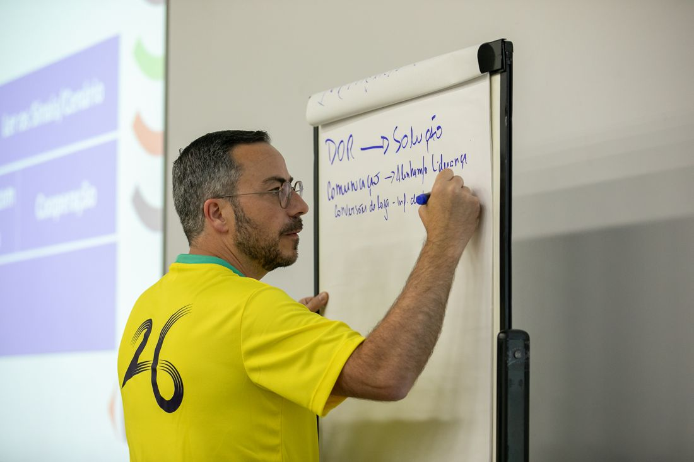
Conservar é segurar o passado. Preservar é carregar o essencial.
A pressão por padronizar era enorme: consolidar sistemas, unificar práticas, “falar uma língua só”. Quando são apagados os rituais que organizam a vida das pessoas, elas ficam desorientadas. E desorientação, em ambiente operacional, vira ruído, retrabalho e perda de confiança.
Cena · visitas de loja na integração
Um dos momentos mais fortes era quando uma liderança sênior perguntava o nome de alguém, escutava uma história, agradecia pelo trabalho e perguntava: “o que, aqui, a gente não pode perder?”. A resposta quase nunca vinha em linguagem corporativa.
Não perder o respeito. Não perder a proximidade. Não perder a união do time. Não perder a nossa disciplina.
Isso é cultura.
Ritual mínimo · as manhãs de loja
Com a correria, os encontros rápidos no início do turno tinham sido descontinuados em várias unidades. Quando foram retomados, o efeito foi imediato: devolviam continuidade. Às vezes, preservar um ritual simples é mais transformador do que criar um novo.
Ato III · 2021–2025Ferramenta central · toque nos canos
Os 4Cs: clientes, coragem, compromisso com a mudança, cooperação
Clareza não é prática. Os valores precisavam descer para o encanamento.
Ato III · 2020–2023Crise e correção do modelo
Quando a cultura é posta à prova
Duas tragédias expuseram a distância entre o que a empresa dizia e o que acontecia na ponta.
Em 19 de novembro de 2020, João Alberto Silveira Freitas, um homem negro de 40 anos, morreu após ser espancado por seguranças em uma loja Carrefour em Porto Alegre. Antes de ser uma crise de reputação, foi uma morte, e a evidência de que o racismo estrutural se manifesta também nos corredores de uma empresa. Em 2021, a companhia firmou um Termo de Ajustamento de Conduta antirracista com o Ministério Público.
Em abril de 2022, já na integração, um novo episódio de abordagem discriminatória em Salvador mostrou que medidas pontuais não bastavam. O problema era de sistema.
Colocar o “i” na frente
Inclusão/Clientes/Coragem/Compromisso/Cooperação
Menos de um ano depois do lançamento, a companhia reabriu o modelo. A Inclusão passou a ser o primeiro pilar. Em poucas semanas, o novo modelo foi validado pela alta liderança e levado a todo o país.
Como foi feito
Um Manifesto da Inclusão escrito por muitas mãos: mais de 40 workshops regionais em que as equipes gravaram suas próprias versões. Entre jun/2022 e mar/2023, mais de 15 mil líderes participaram diretamente, sem intermediários.
Em uma organização com dezenas de milhares de pessoas, inclusão não pode ser um evento. Precisa virar um sistema.
Maturidade cultural não é acertar na primeira versão. É ter coragem de mudar a segunda.
Ato III · 2021–2023Evidência
Da promessa à prática
A resposta não ficou no comunicado. Virou orçamento, meta e critério de promoção.
Nas áreas impactadas diretamente pelos workshops, o eNPS subiu 11 pontos. A presença de mulheres e de pessoas negras em cargos de liderança cresceu de forma contínua.
Inclusão não é campanha. É critério de gestão, ou não é nada.
Inclusão não apaga uma tragédia, e nenhum indicador deveria ser usado para isso.
| Programa | Alcance |
|---|---|
| Estágio Afirmativo (desde 2021) | 400+ jovens negros em três ciclos |
| Trainee Afirmativo (2021–2023) | 150+ trainees negros contratados |
| Aceleração de Carreiras para Pessoas Negras | 300+ participantes, promoção acima de 40% |
| Bolsas em Tecnologia e Inovação | 600+ bolsas, com universidades e ONGs |
| ELLAs (2019–2022) e Mulheridades (2023) | 2.700 mulheres formadas; 1.200 na 1ª turma do sucessor |
| Parcerias | MOVER; Universidade Zumbi dos Palmares |
Ato III · 2022–2024Conceito de apoio · McChrystal, Team of Teams
Liderança em rede
A restrição que virou método.
No varejo alimentar, o EBITDA ajustado gira entre 4% e 6%. Não havia espaço para consultoria cara. A Escola de Líderes nasceu em 2022 dessa restrição, com três escolhas:
- 01Professores da casa. Mais de 170 executivos deram aulas e painéis.
- 02Infraestrutura própria. Estúdio profissional e plataforma remodelada.
- 03Múltiplos formatos. Presencial, online, mobile e sob demanda.
Abilio Diniz foi padrinho e professor de turma no primeiro ano; Alexandre Bompard, CEO global, nos seguintes. A formação teve certificação credenciada pelo MEC.
Liderança é serviço. E serviço inclui ensinar.
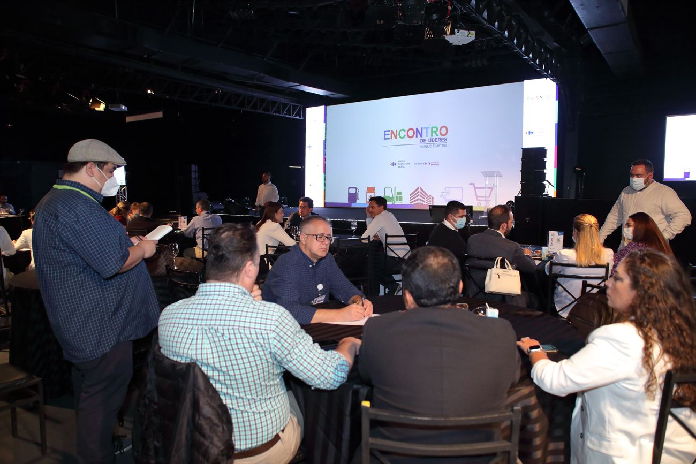
Cena · o dia em que o organograma sumiu
No auge da integração, reunimos mais de cem líderes. Começamos sem projetar o organograma, só com uma pergunta:
O que você faria se não precisasse pedir permissão?
O silêncio deu lugar a uma avalanche de ideias. Sem o mapa de cargos, as pessoas falaram de propósito, cliente e resultado. Naquele dia, liderança deixou de ser título e virou rede.
Ato III · 2022–2024Evidência
Escala e efeito
Enquanto a matriz formava algumas centenas por ciclo, o Brasil formou 14 mil em dois anos.
14 milgestores formados em dois anos
320transmissões ao vivo, 2022–2024
300 milvisualizações na plataforma
18% → 12%turnover de líderes nas áreas de maior participação
+7 p.p.favorabilidade em liderança entre formados
+9 / +6 p.p.mulheres e pessoas negras na liderança, entre formados
Cena · 2023, integração final das operações
Um diretor me disse:
Percebi que não adianta pedir confiança se eu mesmo não confio.
Nada no processo mudou. Mudou o comportamento de quem liderava, e o time passou a compartilhar erros e pedir ajuda.
Não faltava orçamento para formar líderes. Faltava acreditar que os líderes da casa sabiam ensinar.
Ato III · 2023–2024Ferramenta · ritual de cliente
O cliente como ritual
Todo varejista diz que o cliente está no centro. O 555 transformou a frase em um número por loja.
5Negócio
Sortimento
Precificação
Promoções
Disponibilidade de estoque
Eficiência de processos
5Serviço
Tempo de espera
Eficiência de caixa
Cordialidade
Suporte digital
Resolução de problemas
5Atendimento
Acolhimento inclusivo
Experiência em loja
Pós-venda
Canais de contato
NPS
Muitos indicadores já existiam, espalhados em relatórios que ninguém lia junto. O 555 os consolidou em um score individual para cada loja, hipermercado e clube, construído a partir da avaliação de clientes e sócios, e não de percepções internas. A base foram as Regras de Ouro do Atendimento Inclusivo, criadas em 2022.
O que se vê em público vira compromisso.
Top 10As viradas celebradas no mesmo palco.
Flop 10Tratado como ponto de partida, nunca como punição.
Uma live mensal de 60 minutos, em formato de programa de TV, com todas as bandeiras expostas. Mais de 30 mil pessoas conectadas todo mês. O COO assumiu o tema, com mensagens semanais a toda a operação.
Ato III · 2023–2024Evidência · mini-casos
Três viradas
Em 2024, o Brasil alcançou o melhor NPS do Carrefour no mundo.
pontos de NPS em oito meses. Reuniões diárias pautadas pelo 555 com caixas, atendentes e repositores; treinamento em empatia.
pontos de NPS em um ano. Processos do balcão de serviços redesenhados e cartilha digital de benefícios; mais renovações.
Mais de 80% das lojas melhoraram seus scores entre 2023 e 2024. As filas caíram até 20% onde o programa foi aplicado com consistência.
O 555 não criou o cuidado com o cliente. Deu a ele cadência, visibilidade e palco.
Ato III · 2022–2025A parte difícil
O custo da integração, e o que o amorteceu
A cultura não evitou a dor. Evitou que ela desmontasse a companhia.
123lojas deficitárias fechadas, 2022–2024
R$ 524 miem baixas de ativos e estoques
Por trás de cada loja fechada havia um time, um bairro e famílias. O papel do RH foi garantir que a decisão financeira viesse com uma resposta humana: comunicação transparente, realocação sempre que possível e presença física nas unidades.
Fechar uma loja é uma decisão financeira. Como ela é fechada é uma decisão cultural.
Escuta contínua, não anual
| Instrumento | O que mostrou |
|---|---|
| Melhores Juntos (2022) | 112 mil respondentes; favorabilidade 70%, liderança 71%, cultura 73% |
| Pulso (2022–2023) | Adesão acima de 89%, usada para ajustar o i4Cs ao longo do ciclo |
| Pulso Sempre Juntos (2024) | Orgulho de pertencer acima de 75% |
| Glint (2023) | Brasil no top 3 global do grupo em cultura e liderança |
| Ipsos (2024) | Operação brasileira entre as mais bem avaliadas em reputação |
Nota de leitura
A favorabilidade de 70% em 2022 é menor que os 76% do BIG em 2020. Não é queda da mesma base: é o retrato de uma companhia nova, três vezes maior, no meio da travessia. O número honesto é mais útil que o número bonito.
Ato III · 2019–2025O papel do RH
O RH que precisou mudar primeiro
O RH só teria legitimidade para pedir coerência se fosse o primeiro a demonstrá-la.
Existe uma armadilha comum: o RH desenha a mudança para os outros e se exclui dela. Aprendi na prática que a cultura não se move pela força das campanhas, mas pela coerência dos comportamentos no topo. Podíamos ter um EVP impecável e vídeos emocionantes; se um diretor gritava na reunião, o modelo se quebrava ali. E se quebrava em silêncio.
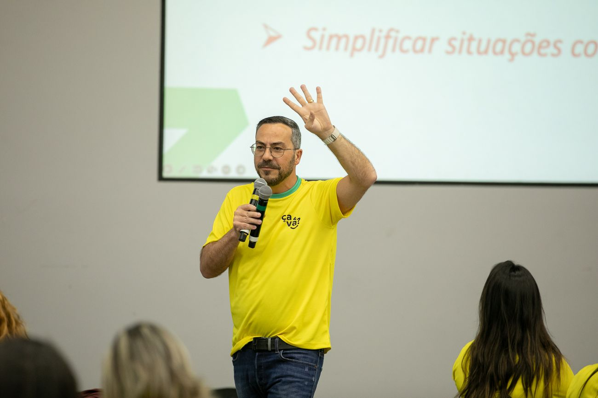
O RH não virou protagonista porque pediu espaço. Virou porque entregou coerência.
- 01Arquitetura, não campanha. O i4Cs entrou em todos os subsistemas. A campanha termina; o sistema continua funcionando quando ninguém está olhando.
- 02Um time, não uma rede de escritórios. O ÇaVa RH nasceu como comunidade integradora: troca, formação conjunta e reconhecimento mútuo.
- 03Viver a inclusão antes de pedi-la. Seleção afirmativa, promoções com recorte de diversidade e linguagem inclusiva dentro do próprio RH.
- 04Presença na ponta. O RH nas lojas e nos CDs, conduzindo oficinas e ouvindo as pessoas diretamente.
Top Employerdois ciclos. Não era prêmio de vaidade: era uma auditoria que obrigava a provar que a cultura não ficou no discurso
53 milbeneficiários do Bolsa Família contratados em menos de um ano
2019–2025Arquivo vivo · toque para ampliar
Pedagogia da presença
Cultura não se ensina por comunicação. Se aprende por convivência.
Palcos, salas, estúdios e corredores. Sete anos de rituais que tornaram a cultura visível para quem estava na ponta.
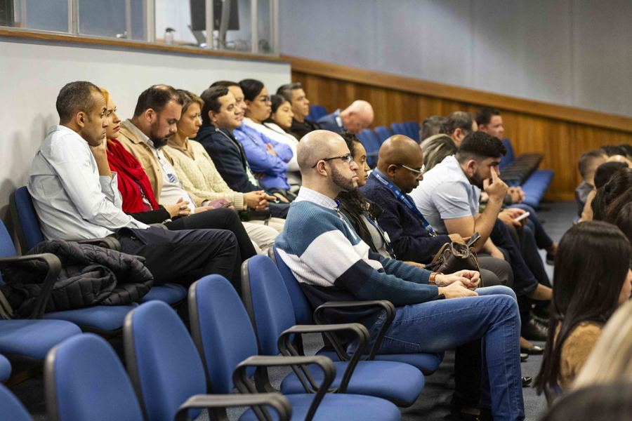
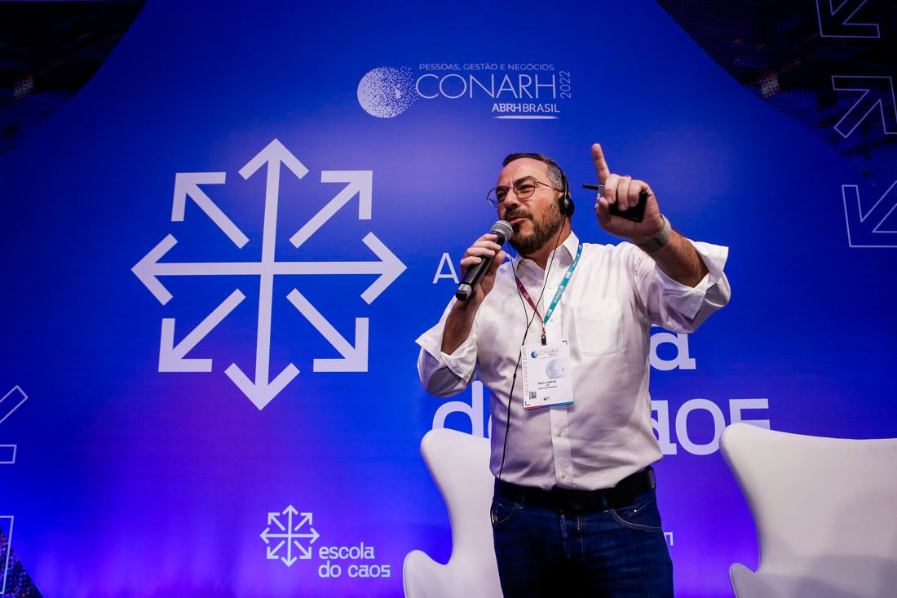
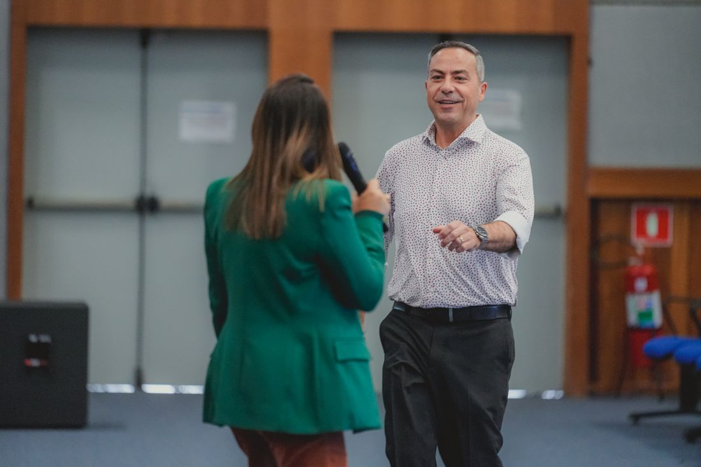
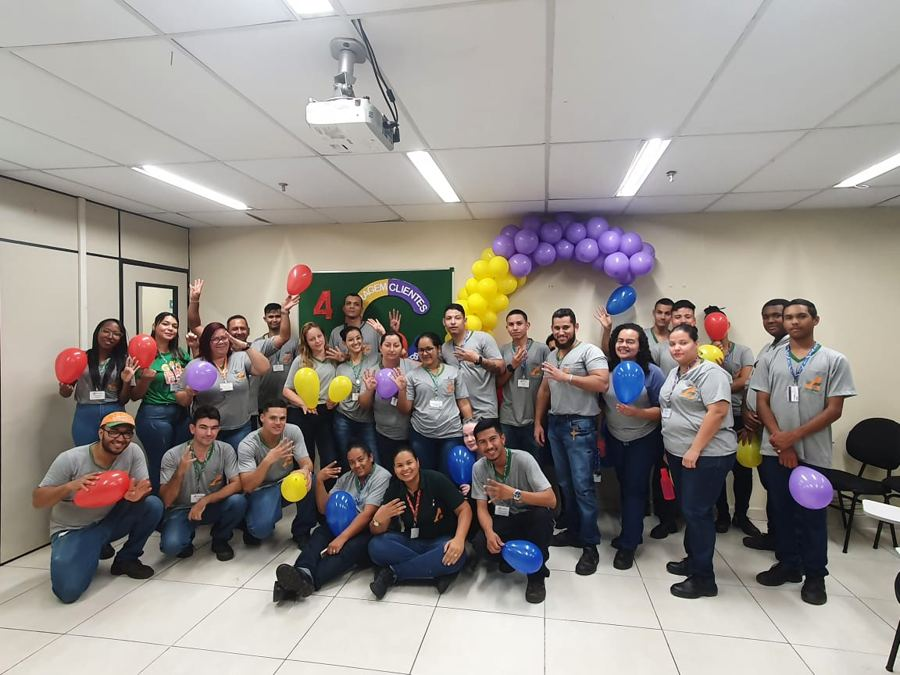
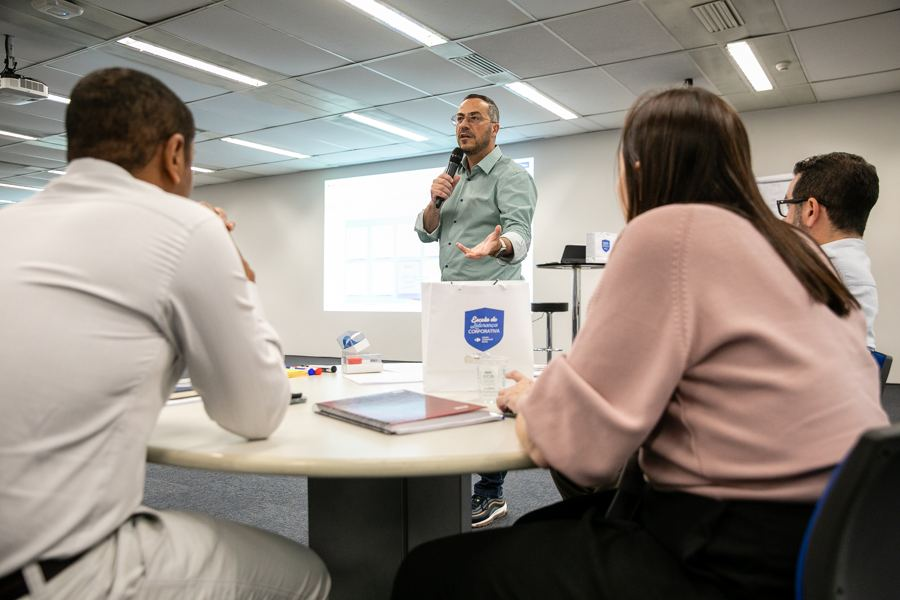
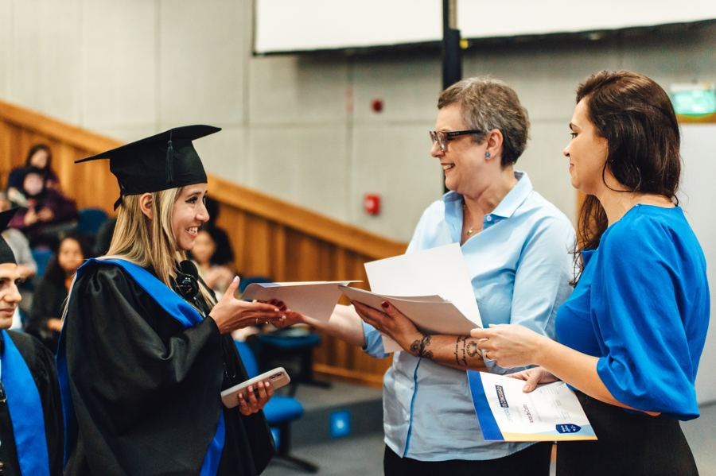
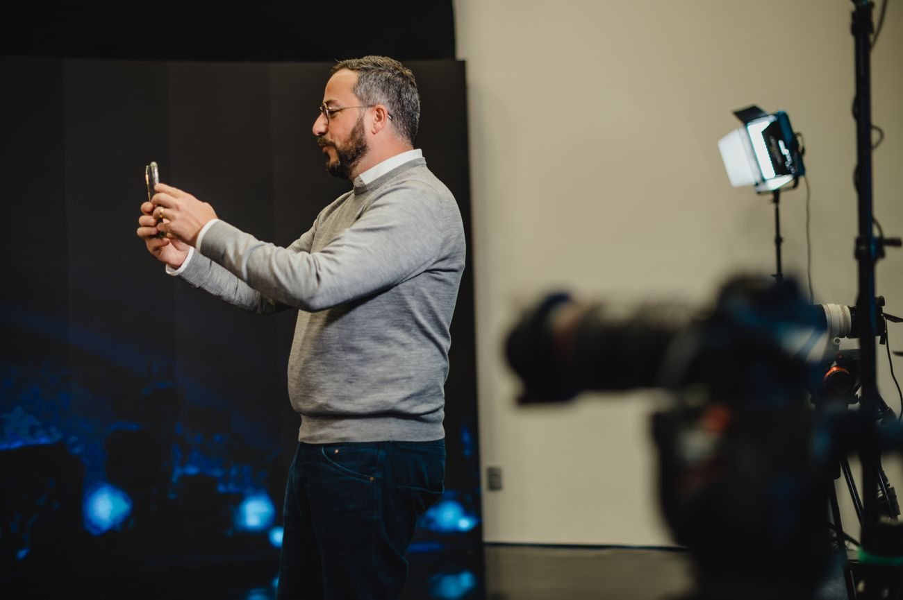
2019–2025Videoteca · abre no YouTube
Para ver e ouvir
O caso, contado em movimento.
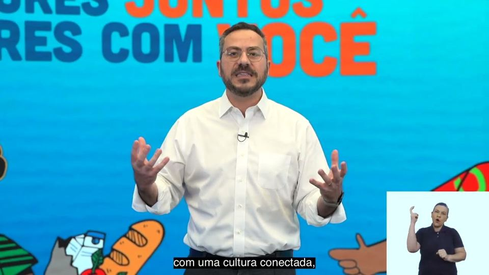
Cultura · série internaTransformação cultural · episódio 01Assistir no YouTube ↗ Grupo BIG · estúdio próprioBig Talk: os bastidores de um programa de liderançaAssistir no YouTube ↗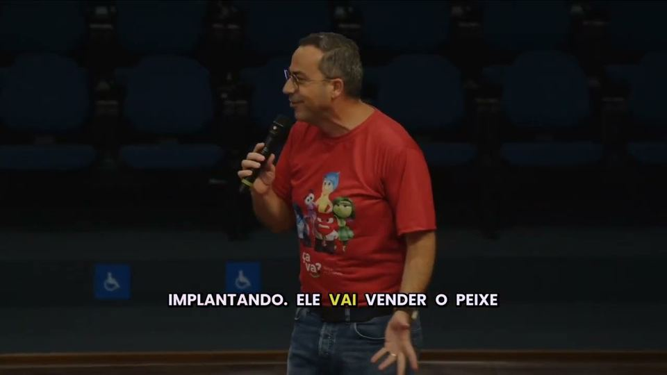
O RH que mudou primeiroTransformação interna no RHAssistir no YouTube ↗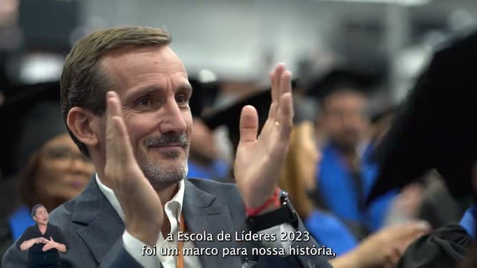
Escola de LíderesResumo da Escola de Líderes 2023Assistir no YouTube ↗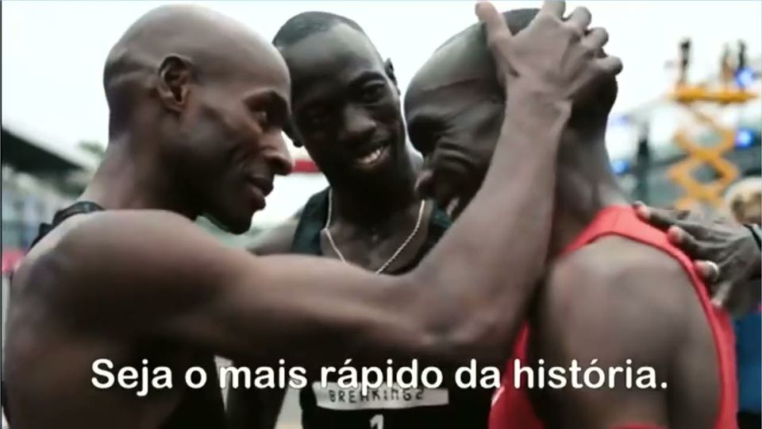
Escola de LíderesMasterclass Escola de LíderesAssistir no YouTube ↗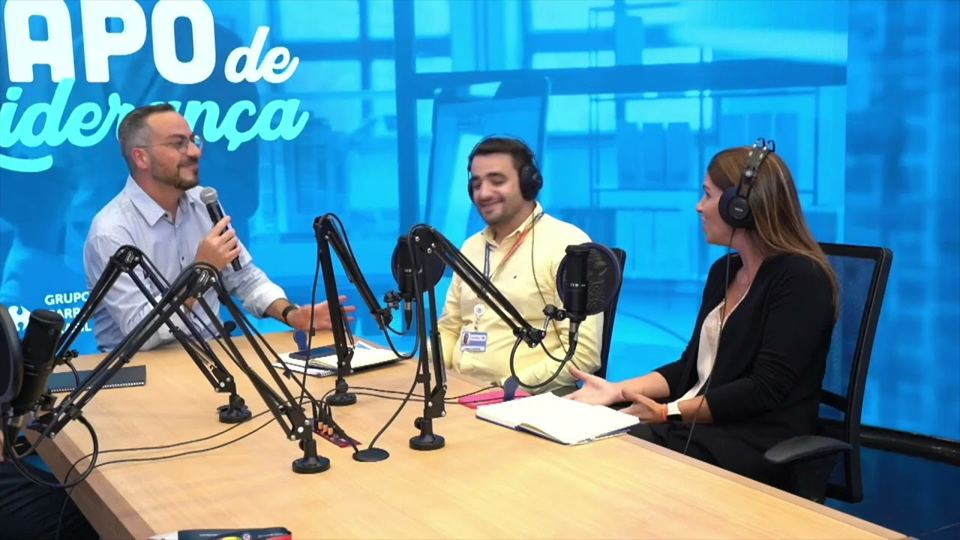
Inclusão · Papo de LiderançaPapo de Liderança #4: liderança inclusivaAssistir no YouTube ↗FechamentoLeitura analítica · Schein, mecanismos primários de incorporação
Por que funcionou
Cada ferramenta acionou um dos seis mecanismos que, segundo Schein, fixam uma cultura.
Selecione um mecanismo para ver as ferramentas do caso que o acionaram. As marcas indicam o ciclo: BIG (2019–21) ou CRF (2021–25).
FechamentoAutodiagnóstico · responda pela sua organização
Cinco lições para quem vai atravessar uma integração
O caso é do varejo. As lições servem para qualquer organização.
FechamentoReferências
Entre 2018 e 2025, estratégias, donos e mercados mudaram
Estratégia define para onde ir. Cultura define se as pessoas chegam juntas.
Campos, K. O Novo Código da Mudança. Cenas e frases citadas nesta apresentação.
Beer, M., & Nohria, N. (2000). Cracking the code of change. Harvard Business Review.
Buckingham, M., & Coffman, C. (1999). First, break all the rules. Simon & Schuster.
Edmondson, A. (2018). The fearless organization. Wiley.
Kotter, J. (1996). Leading change. Harvard Business School Press.
McChrystal, S. (2015). Team of teams. Penguin.
Oakes, K. (2021). Culture renovation. McGraw-Hill.
Reichheld, F. (2003). The one number you need to grow. Harvard Business Review.
Schein, E. H. (2010). Organizational culture and leadership (4ª ed.). Jossey-Bass.
Senn, L., & Hart, J. (2010). Winning teams, winning cultures. Senn Delaney.
Ulrich, D. (2015). Victory through organization. McGraw-Hill.
Wenger, E. (1998). Communities of practice. Cambridge University Press.
Fontes internas: Grupo BIG (2019–2021) e Grupo Carrefour Brasil (2021–2025): documentos de integração cultural, 4Cs e i4Cs, Escola de Líderes, Programa 555 e pesquisas Pulso, Melhores Juntos e Glint.